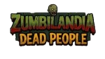

Lucas Amadio é o criador do jogo Zumbilândia - Dead People. Tem 18 anos e muitos sonhos a serem alcançados, um desse grandes sonhos é se tornar um grande desenvolvedor de web sites. Ele tem uma namorada incrivel que o apoia em todos seus sonhos, é um jovem muito percistente e dificil em desistir. Entrou para o ramo de Analise e desenvolvimento de sites sem saber nada e procura muito mais conhecimento com seus professores e colegas de turma.